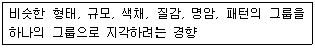
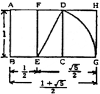
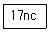
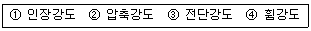
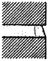

실내건축산업기사 (2010-05-09 기출문제)
1과목: 실내디자인론
1. 스케일(Scale)에 대한 설명 중 옳지 않은 것은?
- 휴먼 스케일은 인간의 신체를 기준으로 파악되고 측정되는 척도 기준이다.
- 휴먼 스케일이 잘 적용된 실내공간은 심리적, 시각적으로 안정되고 편안한 느낌을 준다.
- 휴먼 스케일의 적용은 추상적, 상징적 척도를 추구하는 것이다.
- 기념비적인 스케일은 엄숙함, 경건함 등의 분위기를 창출하는데 사용된다.
(정답률: 81%)

2. 실내디자인의 요소 중 기본이 되는 벽체에 대한 설명으로 옳지 않은 것은?
- 실내공간을 형성하는 주요 기본구성요소 중 인간의 시각적, 촉각적 요소와 가장 관계가 밀접하다.
- 수직적 요소로서 수평방향을 차단하여 공간을 형성한다.
- 외부로부터의 방어와 프라이버시의 확보 역할을 한다.
- 인간의 시선이나 동선을 차단하고 공기의 움직임, 소리의 전파, 열의 이동을 제어한다.
(정답률: 86%)
3. 조명기구의 설치방법에 따른 분류에서 천장에 매달려 조명하는 방식으로 조명기구 자체가 빛을 발하는 악세사리 역할을 하는 것은?
- 코오브
- 브라켓
- 펜던트
- 스텐드
(정답률: 92%)
4. 합리적인 가구배치에 대한 설명으로 옳지 않은 것은?
- 사용목적 이외의 것은 놓지 않는다.
- 크고 작은 가구를 적절히 조화롭게 배치한다.
- 의자나 소파 옆에 조명기구를 배치한다.
- 작은 가구는 벽에 붙이고 큰 가구는 벽으로부터 여유공간을 두어 공간의 변화를 주도록 배치한다.
(정답률: 89%)
5. 치수계획에 있어 적정치수를 설정하는 방법은 최소치＋α, 최대치－α, 목표치±α이다. 이때 α는 적정치수를 끌어내기 위한 어떤 치수인가?
- 표준치수
- 절대치수
- 여유치수
- 기본치수
(정답률: 87%)
6. 디자인 요소로서 선이 갖고 있지 않은 특성은?
- 질감(Texture)
- 방향성(Direction)
- 형(Shape)
- 길이(Length)
(정답률: 84%)
7. 다음 설명에 알맞은 형태의 지각심리는?

- 근접성
- 연속성
- 유사성
- 폐쇄성
(정답률: 90%)
8. 실내디자인의 계획조건 중 외부적 조건에 해당하지않는 것은?
- 경제적조건
- 입지적조건
- 건축적조건
- 설비적조건
(정답률: 84%)
9. 사무소 건축의 실단위계획 중 개방식 배치에 대한 설명으로 옳지 않은 것은?
- 독립성과 쾌적감의 이점이 있으나 방길이에는 변화를 줄 수 없다.
- 청각적 프라이버시의 확보가 어렵다.
- 개실시스템보다 공사비가 저렴하다.
- 전면적을 유용하게 이용할 수 있다.
(정답률: 87%)
10. 전시실의 순회유형 중 연속순회형식에 대한 설명으로 옳은 것은?
- 뉴욕의 근대미술관, 뉴욕의 구겐하임 미술관이 대표적이다.
- 동선이 단순하고 공간을 절약할 수 있는 장점이 있다.
- 중심부에 하나의 큰 홀을 두고 그 주위에 각 전시실을 배치한 형식으로 장래의 확장에 유리하다.
- 각 실에 직접 들어갈 수 가 있는 점이 유리하며, 필요시에는 자유로이 독립적으로 폐쇄할 수가 있다.
(정답률: 68%)
11. 주택의 현관에 관한 설명 중 옳은 것은?
- 출입문의 폭은 최소 600mm이상이 되도록 한다.
- 남쪽에 현관을 배치하는 것은 가급적 피하는 편이 좋다.
- 현관문은 외기와의 환기를 위해 거실과 직접 연결되도록 하는 것이 좋다.
- 전실을 두지 않으며 출입문은 스윙 도어(Swing door)를 사용하는 것이 좋다.
(정답률: 53%)
12. 서로 다른 성질을 가진 조형요소를 병립시킴으로써 일어나는 갈등구조를 미학적으로 여과시키는 행위를 의미하는 다자인의 원리는?
- 통일
- 비례
- 대비
- 리듬
(정답률: 83%)
13. 다음 중 좋은 디자인을 판단하는 기준과 가장 거리가 먼 것은?
- 시대상의 반영
- 재료의 선택
- 디자인의 방법
- 기능성의 부여
(정답률: 47%)
14. 원룸 시스템에 대한 설명으로 옳은 것은?
- 소음조절이 어렵고 개인적 프라이버시가 결여되기 쉽다.
- 좁은 공간에서는 적용이 불가능하다.
- 공간 활용이 자유로운 반면 가구배치가 고정적이다.
- 통행이 필요한 공간을 따로 구획하여야 한다.
(정답률: 61%)
15. 정지된 인체치수와 동작을 중심으로 한 인간공학적 측면에 따른 가구의 분류에 속하지 않는 것은?
- 인체지지용 가구
- 작업용 가구
- 간막이용 가구
- 수납용 가구
(정답률: 65%)
16. 실내디자인을 진행하는 과정 중 실시설계의 내용에 대한 설명으로 옳지 않은 것은?
- 내부적, 외부적 요구사항의 계획 조건파악에 의거하여 기본개념과 제한요소를 설정한다.
- 가구는 디자인 되거나 기성품 중에서 선택, 결정되어 가구 배치도, 가구도 등이 작성된다.
- 디자인의 경제성, 내구성, 효과 등을 높이기 위해 사용재료 및 설치물의 치수와 질 등을 지정한다.
- 공사 및 조립 등의 구체적인 근거를 제시한다.
(정답률: 59%)
17. 일반적으로 규칙적인 요소들의 반복으로 디자인에 시각적인 질서를 부여하는 통제된 운동감각을 의미하는 것은?
- 통일
- 비례
- 대비
- 리듬
(정답률: 79%)
18. 다음 그림은 무엇을 나타내는가?

- 루트 직사각형 비례
- 황금비례
- 정수비례
- 수열에 의한 비례
(정답률: 69%)
19. 부엌 작업대의 가장 효율적인 배치 순서는?
- 준비대 - 조리대 - 개수대 - 가열대 - 배선대
- 준비대 - 개수대 - 조리대 - 가열대 - 배선대
- 준비대 - 개수대 - 가열대 - 조리대 - 배선대
- 준비대 - 조리대 - 개수대 - 배선대 - 가열대
(정답률: 88%)
20. 다음 중 자연형태를 발견할 수 있는 대상이 아닌것은?
- 유기체
- 식물
- 무생물
- 가열대
(정답률: 89%)
2과목: 색채 및 인간공학
21. 다음 중 인간의 제어기능의 향상을 위해 고려해야할 양립성(compatibility)의 종류에 해당하지 않는 것은?
- 공감적 양립성
- 운동 양립성
- 개념적 양립성
- 시각적 양립성
(정답률: 34%)
22. 표시 장치로 나타내는 정보의 유형에서 연속적으로 변하는 변수의 대략적인 값이나 변화의 추세, 변화율 등을 알고자 할 때 사용되는 정보는?
- 정량적 정보
- 정성적 정보
- 묘사적 정보
- 시차적 정보
(정답률: 62%)
23. 어떤 물체나 표면에 도달하는 광(光)의 밀도(密度)를 무엇이라 하는가?
- 휘도(brightness)
- 촉광(candle-power)
- 광도(luminous intensity)
- 조도(illuminance)
(정답률: 68%)
24. 다음 중 인간공학적인 조건을 설계에 반영하고자 할 때 기본적인 고려사항과 가장 거리가 먼 것은?
- 사용자 집단 특성치의 고려
- 제품을 사용하는 특성치의 고려
- 사용자 집단의 민족적 특성 및 관습의 고려
- 설계 집단의 능력
(정답률: 87%)
25. 다음 중 암조응 현상에 관한 설명으로 틀린 것은?
- 동공이 확대된다.
- 색채의 구별이 제한된다.
- 원추세포가 주로 작용한다.
- 완전 암조응에 보통 30~40분이 걸린다.
(정답률: 62%)
26. 다음 중 피로의 측정분류와 측정대상항목이 올바르게 연결된 것은?
- 생화학적 측정 : 에너지대사
- 감각기능검사 : 안구운동
- 순환기능검사 : 뇌파
- 자율신경기능 : 반응시간
(정답률: 57%)
27. 다음 중 무릎 높이의 실측 방법으로 가장 적절한 것은?
- 선 자세에서 측정한다.
- 의자에 앉은 자세에서 측정한다.
- 누운 자세에서 측정한다.
- 무릎을 꿇은 자세에서 측정한다.
(정답률: 67%)
28. 다음 중 신체 내에 체성감각에 있어 가장 많은 신경의 수를 가진 것은?
- 압각
- 통각
- 냉각
- 온락
(정답률: 85%)
29. 다음 중 원형 눈금 표시장치에 비해 계수형 표시장치의 특징으로 적절하지 않은 것은?
- 판독시간이 길다.
- 판독오차가 적다.
- 변화와 추세를 알기 어렵다.
- 변수의 상태나 조건의 관련 범위를 파악하기 어렵다.
(정답률: 43%)
30. 인체의 면을 해부학적으로 분류하였을 때 신체 또는 장기를 좌우로 나누는 면을 무엇이라 하는가?
- 시상면(sagittal plane)
- 관상면(coronal plane)
- 전두면(frontal plane)
- 횡단면(transverse plane)
(정답률: 61%)
31. 빛을 프리즘에 통과하였을 때 나타난 스펙트럼상의 색 중 가장 긴 파장을 가지고 있는 것은?
- 빨강
- 노랑
- 녹색
- 보라
(정답률: 84%)
32. 잔상 현상에 관한 내용으로 틀린 것은?
- 잔상이란 자극 제거 후에도 감각 경험을 일으키는 것이다.
- 부(Negative)의 잔상과 정(Positive)의 잔상이 있다.
- 잔상 현상을 이용하여 영화를 만들게 되었다.
- 부의 잔상은 매우 짧은 시간동안 강한 자극이 작용할 때 많이 생긴다.
(정답률: 64%)
33. 문 스펜서의 색채조화론의 부조화의 종류가 아닌것은?
- 제1부조화
- 제2부조화
- 제3부조화
- 눈부심
(정답률: 53%)
34. 색광의 3원색이 아닌 것은?
- 빨강(red)
- 노랑(yellow)
- 녹색(green)
- 청색(blue)
(정답률: 75%)
35. 다음 중 주목성이 가장 높은 배색은?
- 자극적이고 대조적인 느낌의 배색
- 온화하고 부드러운 느낌의 배색
- 초록이나 자주색 계통의 배색
- 중성색이나 고명도의 배색
(정답률: 91%)
36. 다음 오스트발트 색기호 표기에서 “17”이 뜻하는 것은?

- 순색량
- 흰색량
- 검정량
- 색상
(정답률: 62%)
37. 인접된 주위의 색과 가깝게 보이는 현상은?
- 대비
- 동화
- 잔상
- 향상성
(정답률: 82%)
38. 다음 배색에 대한 설명 중 옳은 것은?
- 색상, 명도를 같게 하거나 유사로 하면 활기있는 배색이 된다.
- 색상을 녹색계로 하면 서늘하고, 청색계로 하면 따뜻하다.
- 명도가 높은 배색은 경쾌하며, 명도가 낮은 배색은 어둡고 무거운 느낌이다.
- 채도가 높은 색은 수수하고 평정된 느낌이다.
(정답률: 85%)
39. 가시 광선의 파장 범위는?
- 350nm~750nm
- 350nm~700nm
- 380nm~780nm
- 200nm~480nm
(정답률: 81%)
40. 다음 중 색채 측정 및 색채 관리에 가장 널리 활용되고 있는 것은 어느 것인가?
- Lab형식
- RGB형식
- HSB형식
- CMY형식
(정답률: 68%)
3과목: 건축재료
41. 고온소성의 무수석고를 특별히 화학처리한 것으로 킨스시멘트라고 불리우는 것은?
- 혼합석고 플라스터
- 보드용석고 플라스터
- 경석고 플라스터
- 돌로마이트 플라스터
(정답률: 70%)
42. 다음 중 굳지 않은 콘크리트의 재료분리 원인이 아닌 것은?
- 굵은골재의 최대치수가 지나치게 큰 경우
- 배합이 적절하지 않은 경우
- 단위수량이 너무 많은 경우
- AE제나 플라이애쉬를 첨가한 경우
(정답률: 82%)
43. 구리(銅)에 대한 설명 중 옳지 않은 것은?
- 상온에서 연성, 전성이 풍부하다.
- 열 및 전기전도율이 크다.
- 암모니아와 같은 약알칼리에 강하다.
- 황동은 구리와 아연을 주체로 한 합금이다.
(정답률: 77%)
44. 강재의 인장시험에서 탄성에서 소성으로 변하는 경계는?
- 비례한계점
- 변형경화점
- 항복점
- 인장강도점
(정답률: 67%)
45. 전건(全乾)목재의 비중이 0.4일때, 이 전건(全乾) 목재의 공극율은?
- 26%
- 36%
- 64%
- 74%
(정답률: 47%)
46. 플라스틱재료의 일반적인 성질에 대한 설명 중 옳지 않은 것은?
- 흡수성이 적고 거의 투수성이 없다.
- 전성, 연성이 크고 피막이 강하다.
- 강성이 크며 온도변화에 대하여 변형이 적다.
- 착색이 비교적 자유롭다.
(정답률: 81%)
47. 목재에 관한 기술 중 옳지 않은 것은?
- 목재는 건조할수록 강도는 작아진다.
- 목재는 섬유방향의 강도가 직각방향보다 크다.
- 섬유포화점의 함수율은 30%정도이다.
- 목재가 공극을 포함하지 않은 실제 부분의 비중을 진비중이라 한다.
(정답률: 78%)
48. 콘크리트용 혼화재로서 초미립자이며 구형으로, 워커빌리티를 향상시키고 강도를 증대시키는 것은?
- 에트린가이트계
- 실리카흄
- 고로슬래그
- 가용성 규산분말
(정답률: 46%)
49. 다음 중 알루미늄 창호에 대한 설명으로 옳은 것은?
- 강성이 작고, 열에 의한 변형이 크다.
- 비중이 철의 약 3배이다.
- 산, 알칼리 및 해수에 침식되지 않는다.
- 강제 창호에 비하여 내화성이 크다.
(정답률: 47%)
50. 다음 재료 중 천연석에 해당되지 않는 것은?
- 트래버틴
- 대리석
- 화강석
- 테라죠
(정답률: 67%)
51. 테라코타의 용도로써 가장 옳은 것은?
- 방수를 위한 목적으로 사용
- 보온을 위하여 사용
- 장식을 위한 목적으로 사용
- 방부를 위한 목적으로 사용
(정답률: 77%)
52. 다음 각 유리제품의 용도를 잘못 연결한 것은?
- 복층유리 : 방음, 단영, 결로방지용
- 색유리 : 스테인드글라스, 벽, 천장 등의 판넬용
- 프리즘 유리 : 자외선 및 적외선 차단용
- 망입유리 : 도난 및 화재방지용
(정답률: 67%)
53. 회반죽 바름의 주원료가 아닌 것은?
- 소석회
- 해초풀
- 모래
- 점토
(정답률: 76%)
54. 감람석이 변질된 것으로 색조는 암녹색 바탕에 흑백색의 아름다운 무늬가 있고 경질이나 풍화성이 있어 외벽보다는 실내장식용으로 사용되는 것은?
- 현무암
- 점판암
- 응회암
- 사문암
(정답률: 59%)
55. 도료의 희석제에 관한 설명 중 옳지 않은 것은?
- 휘발성 용제라고도 한다.
- 칠의 바탕에 침투하여 고착이 잘되게 한다.
- 도료의 점도를 적게하고 솔질이 잘되게 한다.
- 아마인유, 대마유, 대두유와 같은 천연유를 쓰기도 한다.
(정답률: 60%)
56. 콘크리트의 골재 분리현상에 대한 대책으로 옳지 않은 것은?
- 잔골재율을 증가시킨다.
- 물-시멘트비를 증가시킨다.
- AE제나 양질의 포졸란을 사용한다.
- 골재의 분리가 안정되면 균일하게 될 때까지 재비빔을 하여 타설하는 것이 좋다.
(정답률: 59%)
57. 접착제의 분류가 옳지 않은 것은?
- 식물성 접착제 - 아교, 알부민, 카세인
- 고무계 접착제 - 네오프랜, 치오콜
- 광물질 접착제 - 규산소다, 아스팔트
- 합성수지계 접착제 - 요소수지 접착제, 아크릴수지 접착제
(정답률: 62%)
58. 목재의 강도 중 큰 순서대로 열거한 것 중 옳은 것은? (단, 섬유에 평행한 가력방향 임)

- ① ＞ ④ ＞ ② ＞ ③
- ④ ＞ ① ＞ ② ＞ ③
- ② ＞ ① ＞ ④ ＞ ③
- ① ＞ ③ ＞ ② ＞ ④
(정답률: 56%)
59. 투명도가 높아 유기유리라고 불릴우며 착색이 자유롭고 내충격강도가 크며 채광판, 도어판, 칸막이벽 제조에 적합한 합성수지는?
- 불소수지
- 아크릴수지
- 페놀수지
- 실리콘수지
(정답률: 86%)
60. 다음 미장재료 중 균열 발생이 가장 적은 것은?
- 회반죽
- 시멘트 모르타르
- 경석고 플라스터
- 돌로마이트 플라스터
(정답률: 46%)
4과목: 건축일반
61. 다음 소방시설 중 소화설비에 속하지 않는 것은?
- 소화기구
- 옥외소화전설비
- 물분무소화설비
- 제연설비
(정답률: 78%)
62. 철골조 기둥(작은지름 25cm이상)이 내화구조 기준에 부합하기 위해서 두께 최고 7cm 이상을 보강해야 하는 재료에 해당되지 않는 것은?
- 콘크리트블록
- 철망모르타르
- 벽동
- 석재
(정답률: 62%)
63. 건물의 피난층 외의 층에서는 거실의 각 부분으로부터 피난층 또는 지상으로 통하는 직통계단까지 보행거리를 얼마 이하로 해야하는가?
- 10m
- 20m
- 30m
- 40m
(정답률: 64%)
64. 다음 중 철근콘크리트 기둥에 사용하는 피철근에 관한 설명으로 옳지 않은 것은?
- 기둥의 양단부보다 중앙부에 많이 배근한다.
- 콘크리트가 수평으로 터져나가는 것을 구속한다.
- 주근의 좌굴을 방지한다.
- 수평력에 의해 발생하는 전단력에 저항한다.
(정답률: 65%)
65. 로마시대의 주택에 관한 설명으로 옳지 않은 것은?
- 판사(Pansa)의 주택같은 부유층의 도시형 주거는 주로 보도에 면하여 있었다.
- 인술라(insula)에는 일반적으로 난방시설과 개인목욕탕이 설치되었다.
- 인술라(insula)의 1층은 상점으로 사용되었으며, 위층은 아파트로 각각의 계단을 통해 올라가게 되어있었다.
- 타블리눔(tablinum)은 가족의 중요문서 등이 보관 되어 있는 곳이었다.
(정답률: 66%)
66. 벽돌구조에서 벽동의 형태가 고르지 않을 때 거친 질감효과를 내기에 가장 적당한 줄눈의 형태는 어느것인가?
- 평줄눈
- 블록줄눈
- 오목줄눈
- 민줄눈
(정답률: 45%)
67. 다음 중 건축구조기술사에 의한 구조안전 확인대상 건축물이 아닌 것은?
- 층수가 10층인 건축물
- 다중이용건축물
- 한쪽 끝은 고정되고 다른 끝은 지지되지 아니한 구조로 된 차양 등이 외벽의 중심선으로부터 2m 돌출된 건축물
- 스팬이 40m인 건축물
(정답률: 43%)
68. 다음 중 철근콘크리트구조에서 철근을 일정 두께의 콘크리트로 피복하는 이유로 가장 부적절한 것은?
- 철근의 방청
- 철근의 내화피복
- 철근의 부착력유지
- 철근의 좌굴방지
(정답률: 35%)
69. 그림과 같은 벽돌벽 치장 줄눈의 명칭은

- 민줄눈
- 빗줄눈
- 평줄눈
- 오목줄눈
(정답률: 87%)
70. 문화 및 집회시설 중 공연장의 개별관람석(바닥면적이 300m2이상인 것에 한한다)의 각 출구의 유효너비기준은?
- 0.75m 이상
- 1.2m 이상
- 1.5m 이상
- 2.0m 이상
(정답률: 75%)
71. 다음 중 조적식 구조에서 칸막이벽의 두꼐는 최소 얼마이상으로 해야 하는가?
- 9cm
- 12cm
- 15cm
- 18cm
(정답률: 67%)
72. 당해 용도에 사용되는 바닥면적의 합계가 500m2인 건축물일 경우 건축기계설비기술사 또는 공조냉동기계기술사의 협력을 받아야 하는 건축물의 용도에 해당하지 않는 것은?
- 냉동냉장시설
- 향온향습시설
- 자동소화설비시설
- 특수청정시설
(정답률: 54%)
73. 벽돌쌓기 방식 중 주로 장막벽으로서 의장적 효과를 위한 것은?
- 영식쌓기
- 미식쌓기
- 프랑스식쌓기
- 네덜란드식쌓기
(정답률: 54%)
74. 이태리에서 시작된 1600년에서 1750년 사이의 서양예술사조로서, 율동과 긴장감이 넘치는 선과 매스, 그리고 고전적 모티브의 자유로운 사용등으로 특정지어지는 양식은?
- 바로크시대
- 르네상스시대
- 매너리즘시대
- 로코코시대
(정답률: 41%)
75. 다음 중 모임지붕과 같은 지붕귀에는 중도리, 마릇대 등을 받치는 동자기둥이나 대공을 세울 수 있도록 도리에서 지붕보에 걸쳐대는 것은?
- 우미량
- 처마도리
- 박공보
- 추녀
(정답률: 36%)
76. 다음 중 오피스텔과 공동주택에 설치하는 개별난방설비에 관한 설명으로 옳지 않은 것은?
- 보일러는 거실 외의 곳에 설치하고 보일러를 설치하는 곳과 거실 사이의 경계벽은 출입구를 포함하여 불연재료로 마감한다.
- 보일러실의 윗부분에는 0.5m2이상의 환기창을 설치한다.
- 오피스텔의 경우 난방구획마다 내화구조로 된 벽바닥과 갑종방화문으로 구획한다.
- 기름보일러를 설치하는 경우에는 기름저장소를 보일러실외의 다른 곳에 설치한다.
(정답률: 52%)
77. 다음 중 철골조 각 부의 사용개소에 관계되는 주배로서 옳지 않은 것은?
- 인장재의 접합 : 턴버클(turn buckle)
- 바닥판 : 데크 플레이트(deck plate)
- 웨브의 보강 : 클립 앵글(clip angle)
- 주각부 : 사이드 앵글(side angle)
(정답률: 68%)
78. 오피스 랜드스케이프에 관계된 내용과 거리가 먼것은?
- 커큐니케이션의 융통성이 있다.
- 소음과 프라이버시에 유리하다.
- 공간 이용에 효율을 높일 수 있다.
- 공간에 가변성을 줄 수 있다.
(정답률: 85%)
79. 목구조의 맞춤에 사용하는 보강철물로서 왕대공과 평보와의 연결부에 사용하는 것은?
- 감잡이쇠
- 띠쇠
- 듀벨
- 양면 꺽쇠
(정답률: 53%)
80. 특이한 조형과 규칙이 없는 평면으로 대표되는 롱샹성당을 건축한 사람은?
- 존 포프(John R. Pope)
- 르 꼬르뷔제(Le Corbusier)
- 미스 반 데어 로에(Mies van der Rohe)
- 프랭크 로이드 라이트(F. L. Wright)
(정답률: 75%)